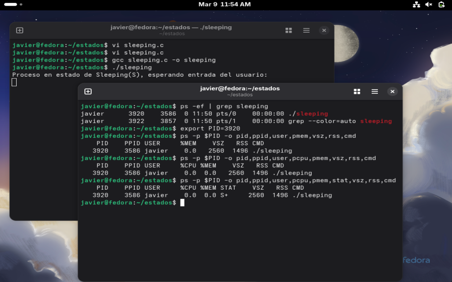
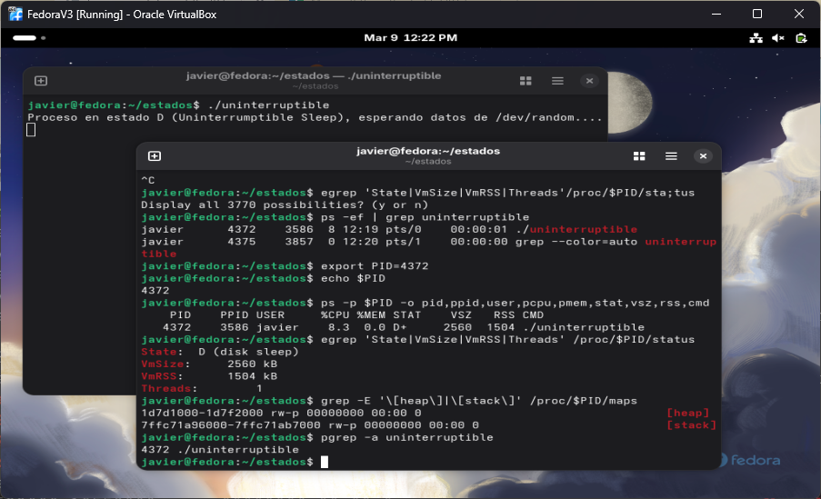
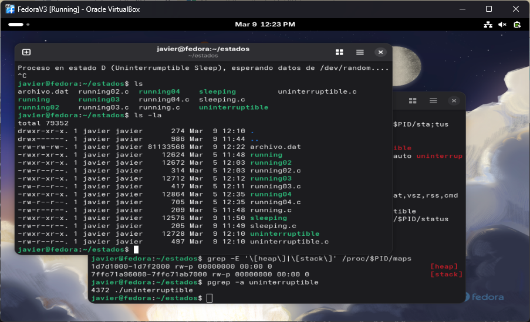
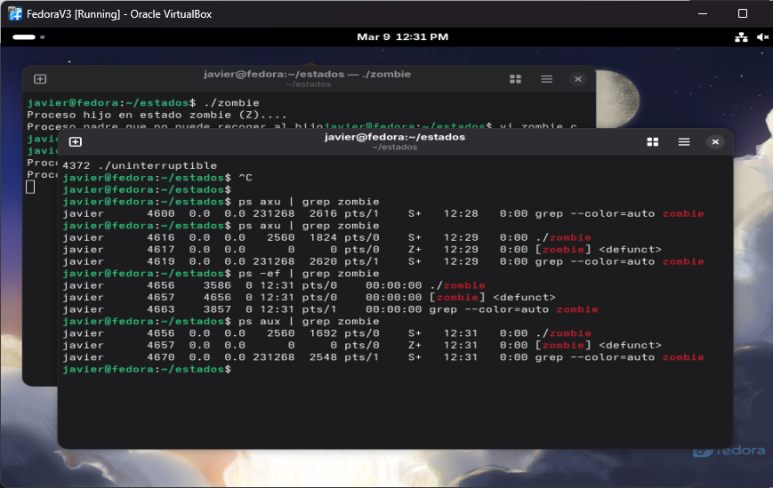
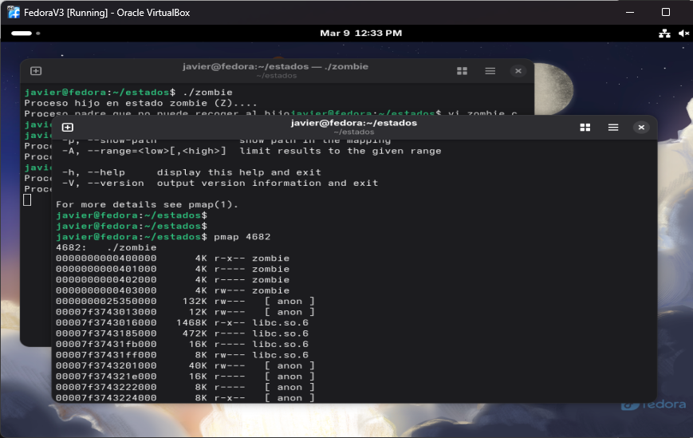

Ver estado sleeping (S), uninterrumptable (D) y Zombie
1. Objetivos
Objetivo General
Ver como algunos de los diferentes estado de los procesos (Sleeping, Uninterrumpible y Zombie)
Objetivos Específicos
- Crear un programa que muestre el estado de sleep (S).
- Crear un programa que muestre el estado de uninterruptible (D).
- Crear un programa que muestre el estado de zombie (Z).
2. Investigación y Marco Conceptual
Entropia
La entropía en informática es una medida de la aleatoriedad o imprevisibilidad de los datos dentro de un sistema. En sistemas operativos como Linux, la entropía se obtiene de diferentes eventos del hardware, como movimientos del mouse, pulsaciones del teclado, interrupciones del sistema y actividad del disco. Esta información se recolecta y se mezcla en el kernel para generar números aleatorios seguros, los cuales son fundamentales para procesos de seguridad como la generación de claves criptográficas, certificados digitales y sistemas de autenticación.
Directorio /dev/random
En Linux, /dev/random es un dispositivo especial del sistema que genera números aleatorios basados en la entropía del sistema. Esta entropía se obtiene de eventos impredecibles del hardware, como el movimiento del mouse, la actividad del teclado, interrupciones del sistema y operaciones de disco.
A diferencia de otros generadores pseudoaleatorios, /dev/random prioriza la seguridad, por lo que puede bloquearse si el sistema no cuenta con suficiente entropía disponible. Esto lo hace especialmente útil para tareas relacionadas con la criptografía, como la generación de claves seguras, certificados digitales o tokens de autenticación.
Libreria fcntl.h
La librería fcntl.h en C se utiliza para realizar operaciones avanzadas sobre archivos y descriptores de archivo en sistemas Unix y Linux. A través de funciones como open() y fcntl(), permite controlar el acceso a archivos, establecer modos de apertura, manejar bloqueos y modificar propiedades de los descriptores. Gracias a estas capacidades, fcntl es una herramienta fundamental para la gestión eficiente de archivos y recursos del sistema dentro de programas que interactúan directamente con el sistema operativo.
3. Desarrollo Técnico
Paso 1. Programa en estado de sleeping.
Cuando un archivo se encuentra en Sleeping (S) este busca recibir cualquier input del usuario. Funciones como cin en c++, pero en c se utiliza getchar() para obtener cualquier caracter del usuario.
Una ves que el usuario ingresa un caracter el programa finaliza su ejecucion de manera inmedianta por lo cual no pasa por el estado de ejectuando o zombie. Al usar ps -p $PID -o pid,ppid,user,pcpu, pmem, stat, vsz, rss,cmd se puede obtener el estado en el cual se esta ejectuando el programa el cual es S como se puede ver en la Figura 1.
Paso 2. Estado D
Este estado es similar al sleep en el cual esta esperando que un input termine de leerse. En este caso se abre un archivo que esta escribiendo un archivo con 0. Para eso primero hay que darle los permisos necesarios al archivo para que pueda leer datos de ese directorio. Luego revisa si existe, si no existe lo crea y si existe lo abre. Luego crea un buffer donde los datos estan constantemente siendo escritos. Ademas obliga que el sistema escriba directamente al disco duro con fsync()
Este esta constantemente leyendo el directorio. Igualmente se puede obtener la cantidad de informacion que ocupa en el heap y el stack, en la Figura 2 se muestra informacion extra como su numero de Threads, VmRSS y VmSize.
En la Figura 3 se puede observar la cantidad de informacion que el archivo lee, mas porque la lectura se encontraba dentro de un ciclo while, nunca deja de escribir datos. Si no se detiene el archivo, este crece de manera exponencial.
Paso 3. Procesos Zombie
Como ya se ha explorado anteriormente un proceso puede crear hijos para que hagan subprocesos con la funcion fork(). Correctamente el padre debe esperar que su hijo termine su ejecucion para poder matarlo. Sin embargo cuando en el padre no espera que su hijo termine, este sigue ejecutando y nunca lo recogue. Entonces se vuelve un zombie. En este ejemplo de la Figura 4, se puede observar como el hijo toma el estado Z ademas que se ve defunct.
Con pmap se puede ver la cantidad de hijos que tiene el proceso, como se puede ver en la Figura 5.
4. Evidencia de Ejecución
Durante la ejecución del programa, se enviaron distintas señales utilizando el comando





5. Conclusiones y Trabajo Futuro
Dentro de este ejercicio se reinforzo lo que ya se habia visto en otras lecciones. La diferencia entre los procesos sleeping y zombie. Ademas que se vio un nuevo estado con uninterupted, el cual es similar al sleeping pero este esta esperando input y ouput del kernel. Este no se puede detener incluso con señales como SIGKILL. Tambien se vio como la utilidad de la funcion, asdas
Trabajo Futuro: Implementar temporizadores con alarm(),
comparar el manejo de señales en Linux contra Windows y desarrollar un handler en BASH.
6. Bibliografía
Reporte generado con ayuda de ChatGPT